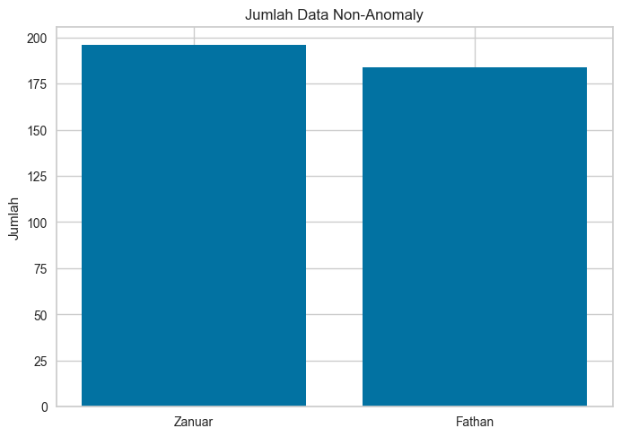
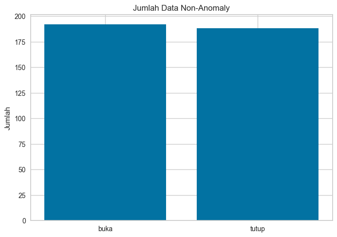

Identifikasi Suara Pembicara da Buka Tutup#
import librosa
import soundfile as sf
import numpy as np
import os
import random
import string
import pandas as pd
from scipy.stats import skew, kurtosis
from sklearn.model_selection import train_test_split
from sklearn.ensemble import RandomForestClassifier
from sklearn.preprocessing import StandardScaler
from sklearn.metrics import classification_report, accuracy_score
import joblib
from sklearn.svm import SVC
import os
import warnings
warnings.filterwarnings('ignore')
Menyiapkan Data Audio#
# buka_data_pitch_aug = "./data_audio/aug/buka/pitch/"
# buka_data_stretch_aug = "./data_audio/aug/buka/stretch/"
# buka_data_noise_aug = "./data_audio/aug/buka/noise/"aug
buka_data_real = "./data_audio/buka_wav_asli/"
buka_aug = "./data_aug/buka_aug/"
buka_data_fathan = "./data_audio/data_fathan/buka/"
# tutup_data_pitch_aug = "./data_audio/aug/buka/pitch/"
# tutup_data_stretch_aug = "./data_audio/aug/buka/stretch/"
# tutup_data_noise_aug = "./data_audio/aug/buka/noise/"
tutup_data_real = "./data_audio/tutup_wav_asli/"
tutup_aug = "./data_aug/tutup_aug/"
tutup_data_fathan = "./data_audio/data_fathan/tutup/"
data_aug = "./data_aug/"
buka_file_real = os.listdir("./data_audio/buka_wav_asli")
tutup_file_real = os.listdir("./data_audio/tutup_wav_asli")
tutup_file_fathan = os.listdir(tutup_data_fathan)
buka_file_fathan = os.listdir(buka_data_fathan)
# def augmentData(y, sr, path, name="buka", n_aug=3):
# # Pastikan folder ada
# for folder in ["pitch", "stretch", "noise", "combined"]:
# os.makedirs(os.path.join(path, folder), exist_ok=True)
# for i in range(n_aug):
# random_string = ''.join(random.choices(string.ascii_letters + string.digits, k=5))
# # Pitch shift ±1 sampai ±2 step
# n_steps = random.choice([-2, -1, 1, 2])
# y_pitch = librosa.effects.pitch_shift(y=y, sr=sr, n_steps=n_steps)
# # Time stretch 0.9 - 1.1
# rate = random.uniform(0.9, 1.1)
# y_stretch = librosa.effects.time_stretch(y=y, rate=rate)
# # Noise kecil
# noise_std = random.uniform(0.003, 0.01)
# y_noise = y + np.random.normal(0, noise_std, y.shape)
# # Kombinasi pitch + stretch + noise
# y_combined = librosa.effects.pitch_shift(y=y, sr=sr, n_steps=n_steps)
# y_combined = librosa.effects.time_stretch(y=y_combined, rate=rate)
# y_combined = y_combined + np.random.normal(0, noise_std, y_combined.shape)
# # Simpan file
# sf.write(os.path.join(path, f"{name}-pitch-{random_string}.wav"), y_pitch, sr)
# sf.write(os.path.join(path, f"{name}-stretch-{random_string}.wav"), y_stretch, sr)
# sf.write(os.path.join(path, f"{name}-noise-{random_string}.wav"), y_noise, sr)
# sf.write(os.path.join(path, f"{name}-combined-{random_string}.wav"), y_combined, sr)
def extract_mfcc(file_path, n_mfcc=13):
y, sr = librosa.load(file_path, sr=16000)
mfcc = librosa.feature.mfcc(y=y, sr=sr, n_mfcc=n_mfcc)
mfcc_mean = np.mean(mfcc, axis=1)
return [np.mean(mfcc, axis=1), np.std(mfcc, axis=1)]
def silent_trim(in_folder, list_file, out):
for i in range(len(list_file)):
y1, sr = librosa.load("./data_audio/" + in_folder + list_file[i])
y_trimmed, index = librosa.effects.trim(y1, top_db=30)
sf.write("./data_audio/processed_trimed/" + out + "audio_trimmed_" + str(i) + ".wav", y_trimmed, sr)
def extract_temo(file_path):
y, sr = librosa.load(file_path, sr=16000)
tempo = librosa.feature.tempo(y=y, sr=sr)
return tempo
def extract_spectral_centroid(file_path):
y, sr = librosa.load(file_path, sr=16000)
centroid = librosa.feature.spectral_centroid(y=y, sr=sr)
return [np.mean(centroid, axis=1), np.std(centroid, axis=1)]
def extract_rms(file_path):
y, sr = librosa.load(file_path)
rms = librosa.feature.rms(y=y)
return [np.mean(rms, axis=1), np.std(rms, axis=1)]
def extract_tonetz(file_path):
y, sr = librosa.load(file_path)
tonnetz = librosa.feature.tonnetz(y=y, sr=sr)
return [np.mean(tonnetz, axis=1), np.std(tonnetz, axis=1)]
def extract_mel(file_path):
y, sr = librosa.load(file_path)
tonnetz = librosa.feature.melspectrogram(y=y, sr=sr)
return [np.mean(tonnetz, axis=1), np.std(tonnetz, axis=1)]
def extract_std(file_path):
y, sr = librosa.load(file_path)
return np.mean(y)
def extract_mean(file_path):
y, sr = librosa.load(file_path)
return np.std(y)
silent_trim("data_fathan/tutup/", tutup_file_fathan, "data_fathan/tutup/")
silent_trim("data_fathan/buka/", buka_file_fathan, "data_fathan/buka/")
silent_trim("tutup_wav_asli/", tutup_file_real, "tutup_file/")
silent_trim("buka_wav_asli/", buka_file_real, "buka_file/")
buka_audio_trimed = os.listdir("./data_audio/processed_trimed/buka_file/")
tutup_audio_trimed = os.listdir("./data_audio/processed_trimed/tutup_file/")
tutup_fathan_trimed = os.listdir("./data_audio/processed_trimed/data_fathan/tutup/")
buka_fathan_trimed = os.listdir("./data_audio/processed_trimed/data_fathan/buka/")
# for audio_buka in buka_file_real:
# y, sr = librosa.load(buka_data_real + audio_buka, sr=16000)
# augmentData(y, sr, "./data_aug/buka_aug")z
# for audio_tutup in tutup_file_real:
# y, sr = librosa.load(tutup_data_real + audio_tutup, sr=16000)
# augmentData(y, sr, "./data_aug/tutup_aug" , name="tutup")
buka_file_aug = os.listdir("./data_aug/buka_aug/")
buka_file_noise_aug = os.listdir("./data_audio/aug/buka/noise/")
tutup_file_aug = os.listdir("./data_aug/tutup_aug/")
tutup_file_noise_aug = os.listdir("./data_audio/aug/buka/noise/")
all_data_buka = [
# *[buka_data_real + real for real in buka_file_real],
*["./data_audio/processed_trimed/buka_file/" + trimed for trimed in buka_audio_trimed],
*["./data_audio/processed_trimed/data_fathan/buka/" + trimed for trimed in buka_fathan_trimed],
# *[buka_aug + pitch for pitch in buka_file_aug],
# *[buka_data_stretch_aug + stretch for stretch in buka_file_stretch_aug],
# *[buka_data_noise_aug + noise for noise in buka_file_noise_aug]
]
all_data_tutup = [
# *[tutup_data_real + real for real in tutup_file_real],
*["./data_audio/processed_trimed/tutup_file/" + trimed for trimed in tutup_audio_trimed],
*["./data_audio/processed_trimed/data_fathan/tutup/" + trimed for trimed in tutup_fathan_trimed],
# *[tutup_aug + pitch for pitch in tutup_file_aug],
# *[tutup_data_stretch_aug + stretch for stretch in tutup_file_stretch_aug],
# *[tutup_data_noise_aug + noise for noise in tutup_file_noise_aug]
]
all_data_zanuar = [
*["./data_audio/processed_trimed/tutup_file/" + trimed for trimed in tutup_audio_trimed],
*["./data_audio/processed_trimed/buka_file/" + trimed for trimed in buka_audio_trimed],
]
all_data_fathan = [
*["./data_audio/processed_trimed/data_fathan/buka/" + trimed for trimed in buka_fathan_trimed],
*["./data_audio/processed_trimed/data_fathan/tutup/" + trimed for trimed in tutup_fathan_trimed],
]
Membuat Klasifikasi Suara Orang#
mfcc_mean_arr = []
mfcc_std_arr = []
tempo_arr = []
centroid_mean_arr = []
centroid_std_arr = []
rms_mean_arr = []
rms_std_arr = []
tonetz_mean_arr = []
tonetz_std_arr = []
std_arr = []
mel_mean_arr = []
mel_std_arr = []
mean_arr = []
label = []
for zanuar in all_data_zanuar:
mfcc = extract_mfcc(zanuar)
tempo = extract_temo(zanuar)
centroid = extract_spectral_centroid(zanuar)
rms = extract_rms(zanuar)
mel = extract_mel(zanuar)
tonetz = extract_tonetz(zanuar)
std_arr.append([extract_std(zanuar)])
mean_arr.append([extract_mean(zanuar)])
mfcc_mean_arr.append(mfcc[0])
mfcc_std_arr.append(mfcc[1])
tempo_arr.append(tempo)
centroid_mean_arr.append(centroid[0])
centroid_std_arr.append(centroid[1])
rms_mean_arr.append(rms[0])
rms_std_arr.append(rms[1])
tonetz_mean_arr.append(tonetz[0])
tonetz_std_arr.append(tonetz[1])
mel_mean_arr.append(mel[0])
mel_std_arr.append(mel[1])
label.append(["zanuar"])
dataset_zanuar = np.hstack((
std_arr,
mean_arr,
mfcc_mean_arr,
mfcc_std_arr,
tempo_arr,
centroid_mean_arr,
centroid_std_arr,
rms_mean_arr,
rms_std_arr,
tonetz_mean_arr,
tonetz_std_arr,
mel_mean_arr,
mel_std_arr,
label
))
dataset_zanuar.shape
(200, 302)
mfcc_mean_arr = []
mfcc_std_arr = []
tempo_arr = []
centroid_mean_arr = []
centroid_std_arr = []
rms_mean_arr = []
rms_std_arr = []
tonetz_mean_arr = []
tonetz_std_arr = []
std_arr = []
mel_mean_arr = []
mel_std_arr = []
mean_arr = []
label = []
for fathan in all_data_fathan:
mfcc = extract_mfcc(fathan)
tempo = extract_temo(fathan)
centroid = extract_spectral_centroid(fathan)
rms = extract_rms(fathan)
mel = extract_mel(fathan)
tonetz = extract_tonetz(fathan)
std_arr.append([extract_std(fathan)])
mean_arr.append([extract_mean(fathan)])
mfcc_mean_arr.append(mfcc[0])
mfcc_std_arr.append(mfcc[1])
tempo_arr.append(tempo)
centroid_mean_arr.append(centroid[0])
centroid_std_arr.append(centroid[1])
rms_mean_arr.append(rms[0])
rms_std_arr.append(rms[1])
tonetz_mean_arr.append(tonetz[0])
tonetz_std_arr.append(tonetz[1])
mel_mean_arr.append(mel[0])
mel_std_arr.append(mel[1])
label.append(["fathan"])
dataset_fathan = np.hstack((
std_arr,
mean_arr,
mfcc_mean_arr,
mfcc_std_arr,
tempo_arr,
centroid_mean_arr,
centroid_std_arr,
rms_mean_arr,
rms_std_arr,
tonetz_mean_arr,
tonetz_std_arr,
mel_mean_arr,
mel_std_arr,
label
))
dataset_fathan.shape
(200, 302)
columns = ["std", "mean", *[f"mfcc_mean_" + str(i + 1) for i in range(len(mfcc_mean_arr[0]))], *[f"mfcc_std_" + str(i + 1) for i in range(len(mfcc_std_arr[0]))], "tempo", *[f"centroid_mean_" + str(i + 1) for i in range(len(centroid_mean_arr[0]))], *[f"centroid_std_" + str(i + 1) for i in range(len(centroid_std_arr[0]))], *[f"rms_mean_" + str(i + 1) for i in range(len(rms_mean_arr[0]))], *[f"rms_std_" + str(i+1) for i in range(len(rms_std_arr[0]))], *[f"tonetz_mean" + str(i+1) for i in range(len(tonetz_mean_arr[0]))], *[f"tonetz_std_" + str(i+1) for i in range(len(tonetz_std_arr[0]))], *[f"mel_mean_" + str(i+1) for i in range(len(mel_mean_arr[0]))], *[f"mel_std_" + str(i+1) for i in range(len(mel_mean_arr[1]))], "label"]
dataset = pd.DataFrame(np.vstack((dataset_zanuar, dataset_fathan)), columns=columns)
dataset
| std | mean | mfcc_mean_1 | mfcc_mean_2 | mfcc_mean_3 | mfcc_mean_4 | mfcc_mean_5 | mfcc_mean_6 | mfcc_mean_7 | mfcc_mean_8 | ... | mel_std_120 | mel_std_121 | mel_std_122 | mel_std_123 | mel_std_124 | mel_std_125 | mel_std_126 | mel_std_127 | mel_std_128 | label | |
|---|---|---|---|---|---|---|---|---|---|---|---|---|---|---|---|---|---|---|---|---|---|
| 0 | -1.3912425e-05 | 0.011563645 | -477.02985 | 123.870926 | 31.23104 | 21.628147 | 2.6245272 | 8.934891 | 2.8156927 | -4.233397 | ... | 1.361756e-06 | 1.0238781e-06 | 8.5486295e-07 | 1.1646457e-06 | 9.721465e-07 | 1.0683531e-06 | 9.962517e-07 | 5.1448353e-07 | 4.4327187e-08 | zanuar |
| 1 | 2.9381583e-06 | 0.009167008 | -503.73605 | 120.55202 | 35.477066 | 24.092228 | 6.4341226 | 17.13923 | -3.7508135 | -9.067448 | ... | 1.2261043e-05 | 9.564429e-06 | 8.407773e-06 | 6.7792535e-06 | 5.472032e-06 | 9.600722e-06 | 9.554846e-06 | 1.3589842e-06 | 2.4014216e-07 | zanuar |
| 2 | -2.6915755e-05 | 0.014714079 | -462.03696 | 143.78949 | 31.145885 | 19.626184 | -5.1409583 | 10.1631565 | 2.2667918 | -6.724922 | ... | 2.1681865e-06 | 5.310814e-06 | 4.375502e-06 | 2.945784e-06 | 1.703815e-06 | 1.2679221e-06 | 9.854289e-07 | 4.3997477e-07 | 7.498288e-08 | zanuar |
| 3 | -3.6700567e-05 | 0.01290706 | -487.8172 | 134.42647 | 22.022692 | 21.886986 | -12.475644 | 11.126036 | 12.090064 | -4.6893053 | ... | 1.7976689e-06 | 9.713395e-07 | 1.2753699e-06 | 1.4913594e-06 | 3.1070072e-06 | 1.3868356e-06 | 7.5324897e-07 | 1.0231956e-06 | 1.4028984e-07 | zanuar |
| 4 | -1.8248955e-05 | 0.01100796 | -500.71594 | 133.7235 | 23.189465 | 22.146875 | -1.1075829 | 12.363001 | 6.970186 | -7.897291 | ... | 1.011622e-06 | 9.558171e-07 | 1.1023789e-06 | 1.5762237e-06 | 2.3345715e-06 | 1.4412492e-06 | 1.029332e-06 | 7.4506085e-07 | 1.9614664e-07 | zanuar |
| ... | ... | ... | ... | ... | ... | ... | ... | ... | ... | ... | ... | ... | ... | ... | ... | ... | ... | ... | ... | ... | ... |
| 395 | -0.00023816079 | 0.02840689 | -419.9184 | 96.09794 | 43.513332 | 24.412283 | 3.4053862 | 24.237545 | -9.35581 | -15.427906 | ... | 0.00042761324 | 0.00036543238 | 0.00041633454 | 0.00013431968 | 3.0467036e-05 | 3.3838023e-05 | 4.9995183e-06 | 4.0988994e-06 | 4.3857045e-07 | fathan |
| 396 | -0.00025117397 | 0.03714193 | -362.42865 | 105.70649 | 36.13 | 12.106636 | -3.3258762 | 31.12015 | -29.63329 | -35.780758 | ... | 0.00089188124 | 0.00038904062 | 0.00031429066 | 0.00013046991 | 3.3043783e-05 | 3.1124986e-05 | 2.1348455e-05 | 8.500945e-06 | 2.1496699e-07 | fathan |
| 397 | -0.0002456648 | 0.035039574 | -364.8346 | 97.0676 | 34.59552 | 16.981377 | -0.8830796 | 28.7523 | -26.535778 | -31.677406 | ... | 0.00028550182 | 0.00022740522 | 0.00027062828 | 3.993777e-05 | 1.6350767e-05 | 1.238361e-05 | 6.885567e-06 | 3.684432e-06 | 3.3721946e-07 | fathan |
| 398 | -0.00023603169 | 0.03278271 | -376.91446 | 100.33139 | 36.553562 | 23.412449 | -0.7632972 | 32.42795 | -26.514513 | -30.365091 | ... | 0.00024938822 | 0.00028553238 | 0.00016753688 | 3.147752e-05 | 4.9862683e-06 | 6.0430452e-06 | 6.213851e-06 | 1.6289555e-06 | 2.180268e-07 | fathan |
| 399 | -0.00018338647 | 0.020430153 | -464.87622 | 89.54807 | 30.715569 | 29.32235 | 2.9537632 | 28.652233 | -14.025778 | -9.449646 | ... | 0.00010284259 | 8.762123e-05 | 2.7892282e-05 | 1.0407598e-05 | 1.2269578e-06 | 9.564186e-07 | 1.2222242e-06 | 1.209763e-06 | 1.1411925e-07 | fathan |
400 rows × 302 columns
dataset.to_csv("./dataset/zanuar_fathan.csv", index=False)
Outlier Detection#
from pycaret.anomaly import *
audio_zanuar_fathan = pd.read_csv("./dataset/zanuar_fathan.csv")
s = setup(data=audio_zanuar_fathan)
abod_model = create_model("abod", fraction=0.05)
df_abod = assign_model(abod_model)
df_abod
---------------------------------------------------------------------------
ModuleNotFoundError Traceback (most recent call last)
Cell In[17], line 1
----> 1 from pycaret.anomaly import *
3 audio_zanuar_fathan = pd.read_csv("./dataset/zanuar_fathan.csv")
5 s = setup(data=audio_zanuar_fathan)
ModuleNotFoundError: No module named 'pycaret'
non_anomaly_data = df_abod[df_abod["Anomaly"] == 0]
non_anomaly_data
| std | mean | mfcc_mean_1 | mfcc_mean_2 | mfcc_mean_3 | mfcc_mean_4 | mfcc_mean_5 | mfcc_mean_6 | mfcc_mean_7 | mfcc_mean_8 | ... | mel_std_122 | mel_std_123 | mel_std_124 | mel_std_125 | mel_std_126 | mel_std_127 | mel_std_128 | label | Anomaly | Anomaly_Score | |
|---|---|---|---|---|---|---|---|---|---|---|---|---|---|---|---|---|---|---|---|---|---|
| 0 | -0.000014 | 0.011564 | -477.029846 | 123.870926 | 31.231039 | 21.628147 | 2.624527 | 8.934891 | 2.815693 | -4.233397 | ... | 8.548629e-07 | 0.000001 | 9.721465e-07 | 1.068353e-06 | 9.962517e-07 | 5.144835e-07 | 4.432719e-08 | zanuar | 0 | -6.453454e-09 |
| 1 | 0.000003 | 0.009167 | -503.736053 | 120.552017 | 35.477066 | 24.092226 | 6.434122 | 17.139231 | -3.750813 | -9.067448 | ... | 8.407773e-06 | 0.000007 | 5.472032e-06 | 9.600722e-06 | 9.554846e-06 | 1.358984e-06 | 2.401422e-07 | zanuar | 0 | -4.388857e-09 |
| 2 | -0.000027 | 0.014714 | -462.036957 | 143.789490 | 31.145885 | 19.626184 | -5.140958 | 10.163157 | 2.266792 | -6.724922 | ... | 4.375502e-06 | 0.000003 | 1.703815e-06 | 1.267922e-06 | 9.854289e-07 | 4.399748e-07 | 7.498289e-08 | zanuar | 0 | -1.149600e-08 |
| 3 | -0.000037 | 0.012907 | -487.817200 | 134.426468 | 22.022692 | 21.886986 | -12.475644 | 11.126036 | 12.090064 | -4.689305 | ... | 1.275370e-06 | 0.000001 | 3.107007e-06 | 1.386836e-06 | 7.532490e-07 | 1.023196e-06 | 1.402898e-07 | zanuar | 0 | -8.236920e-09 |
| 4 | -0.000018 | 0.011008 | -500.715942 | 133.723495 | 23.189465 | 22.146875 | -1.107582 | 12.363000 | 6.970186 | -7.897291 | ... | 1.102379e-06 | 0.000002 | 2.334571e-06 | 1.441249e-06 | 1.029332e-06 | 7.450610e-07 | 1.961467e-07 | zanuar | 0 | -8.567694e-09 |
| ... | ... | ... | ... | ... | ... | ... | ... | ... | ... | ... | ... | ... | ... | ... | ... | ... | ... | ... | ... | ... | ... |
| 395 | -0.000238 | 0.028407 | -419.918396 | 96.097939 | 43.513332 | 24.412283 | 3.405387 | 24.237545 | -9.355809 | -15.427906 | ... | 4.163346e-04 | 0.000134 | 3.046704e-05 | 3.383802e-05 | 4.999519e-06 | 4.098899e-06 | 4.385705e-07 | fathan | 0 | -6.946441e-09 |
| 396 | -0.000251 | 0.037142 | -362.428650 | 105.706490 | 36.130001 | 12.106636 | -3.325876 | 31.120150 | -29.633289 | -35.780758 | ... | 3.142907e-04 | 0.000130 | 3.304378e-05 | 3.112499e-05 | 2.134845e-05 | 8.500945e-06 | 2.149670e-07 | fathan | 0 | -5.427290e-09 |
| 397 | -0.000246 | 0.035040 | -364.834595 | 97.067596 | 34.595520 | 16.981377 | -0.883080 | 28.752300 | -26.535778 | -31.677406 | ... | 2.706283e-04 | 0.000040 | 1.635077e-05 | 1.238361e-05 | 6.885567e-06 | 3.684432e-06 | 3.372195e-07 | fathan | 0 | -1.052222e-08 |
| 398 | -0.000236 | 0.032783 | -376.914459 | 100.331390 | 36.553562 | 23.412449 | -0.763297 | 32.427952 | -26.514513 | -30.365091 | ... | 1.675369e-04 | 0.000031 | 4.986268e-06 | 6.043045e-06 | 6.213851e-06 | 1.628956e-06 | 2.180268e-07 | fathan | 0 | -4.881677e-09 |
| 399 | -0.000183 | 0.020430 | -464.876221 | 89.548073 | 30.715565 | 29.322350 | 2.953763 | 28.652233 | -14.025777 | -9.449646 | ... | 2.789228e-05 | 0.000010 | 1.226958e-06 | 9.564186e-07 | 1.222224e-06 | 1.209763e-06 | 1.141193e-07 | fathan | 0 | -1.783896e-09 |
380 rows × 304 columns
non_anomaly_data.drop("Anomaly", axis=1)
non_anomaly_data.drop("Anomaly_Score", axis=1)
non_anomaly_data.to_csv("./dataset/clean_speaker_identifikasi.csv")
Penyebaran Data#
import matplotlib.pyplot as plt
buka_non_anomaly = non_anomaly_data[non_anomaly_data["label"] == "zanuar"]
tutup_non_anomaly = non_anomaly_data[non_anomaly_data["label"] == "fathan"]
plt.bar(["Zanuar", "Fathan"], [buka_non_anomaly.shape[0], tutup_non_anomaly.shape[0]])
plt.title("Jumlah Data Non-Anomaly")
plt.ylabel("Jumlah")
plt.show()
pd.DataFrame([[buka_non_anomaly.shape[0], tutup_non_anomaly.shape[0]]], columns=["zanuar", "fahtan"])

| zanuar | fahtan | |
|---|---|---|
| 0 | 196 | 184 |
Korelasis Fitur#
def corel_check(x, y, treshold):
data_res = []
corel_arr = []
for data in x:
corel = np.mean(np.corrcoef(x[data], y))
# corel = corelation(x[data], y)
corel_arr.append(corel)
if corel > treshold :
data_res.append(data)
return data_res
label = non_anomaly_data["label"].map({
'zanuar': 0,
'fathan': 1
})
fitur = non_anomaly_data.drop("label", axis=1).drop("Anomaly_Score", axis=1).drop("Anomaly", axis=1)
fitur_bearkorelasi = corel_check(fitur, label, 0.7)
len(fitur_bearkorelasi)
117
fitur_bearkorelasi
['mean',
'mfcc_mean_1',
'mfcc_mean_3',
'mfcc_mean_4',
'mfcc_mean_5',
'mfcc_mean_9',
'mfcc_mean_13',
'mfcc_std_7',
'mfcc_std_8',
'mfcc_std_9',
'centroid_mean_1',
'rms_mean_1',
'rms_std_1',
'tonetz_std_6',
'mel_mean_5',
'mel_mean_6',
'mel_mean_7',
'mel_mean_11',
'mel_mean_12',
'mel_mean_13',
'mel_mean_15',
'mel_mean_18',
'mel_mean_19',
'mel_mean_20',
'mel_mean_51',
'mel_mean_52',
'mel_mean_53',
'mel_mean_62',
'mel_mean_65',
'mel_mean_76',
'mel_mean_77',
'mel_mean_83',
'mel_mean_84',
'mel_mean_85',
'mel_mean_86',
'mel_mean_87',
'mel_mean_88',
'mel_mean_89',
'mel_mean_93',
'mel_mean_94',
'mel_mean_95',
'mel_mean_96',
'mel_mean_97',
'mel_mean_98',
'mel_mean_99',
'mel_mean_100',
'mel_mean_101',
'mel_mean_102',
'mel_mean_103',
'mel_mean_104',
'mel_mean_105',
'mel_mean_106',
'mel_mean_107',
'mel_mean_108',
'mel_mean_109',
'mel_mean_110',
'mel_mean_111',
'mel_mean_112',
'mel_mean_117',
'mel_mean_118',
'mel_mean_119',
'mel_mean_120',
'mel_mean_121',
'mel_mean_122',
'mel_mean_123',
'mel_mean_124',
'mel_std_5',
'mel_std_6',
'mel_std_7',
'mel_std_11',
'mel_std_12',
'mel_std_13',
'mel_std_14',
'mel_std_15',
'mel_std_17',
'mel_std_18',
'mel_std_19',
'mel_std_20',
'mel_std_51',
'mel_std_52',
'mel_std_53',
'mel_std_76',
'mel_std_77',
'mel_std_83',
'mel_std_84',
'mel_std_85',
'mel_std_86',
'mel_std_87',
'mel_std_88',
'mel_std_89',
'mel_std_93',
'mel_std_94',
'mel_std_95',
'mel_std_96',
'mel_std_97',
'mel_std_98',
'mel_std_99',
'mel_std_101',
'mel_std_102',
'mel_std_103',
'mel_std_104',
'mel_std_105',
'mel_std_106',
'mel_std_107',
'mel_std_108',
'mel_std_109',
'mel_std_110',
'mel_std_111',
'mel_std_112',
'mel_std_117',
'mel_std_118',
'mel_std_119',
'mel_std_120',
'mel_std_121',
'mel_std_122',
'mel_std_123',
'mel_std_124']
Model Training#
dataset = pd.read_csv("./dataset/clean_speaker_identifikasi.csv")
X = dataset[fitur_bearkorelasi]
y = dataset["label"]
rf_model = RandomForestClassifier(n_estimators=200, random_state=42)
X_train, X_test, y_train, y_test = train_test_split(X, y, train_size=0.8, random_state=42, stratify=y)
scaler = StandardScaler()
X_train_scaled = scaler.fit_transform(X_train)
rf_model.fit(X_train_scaled, y_train)
y_pred = rf_model.predict_proba(scaler.transform(X_test))
y_pred
array([[0. , 1. ],
[0.925, 0.075],
[0.045, 0.955],
[1. , 0. ],
[1. , 0. ],
[1. , 0. ],
[0. , 1. ],
[0. , 1. ],
[1. , 0. ],
[0. , 1. ],
[1. , 0. ],
[1. , 0. ],
[1. , 0. ],
[0. , 1. ],
[0. , 1. ],
[0. , 1. ],
[0.05 , 0.95 ],
[1. , 0. ],
[1. , 0. ],
[0. , 1. ],
[0.995, 0.005],
[0. , 1. ],
[0. , 1. ],
[0. , 1. ],
[0. , 1. ],
[0. , 1. ],
[1. , 0. ],
[1. , 0. ],
[1. , 0. ],
[1. , 0. ],
[0. , 1. ],
[0.995, 0.005],
[0. , 1. ],
[0. , 1. ],
[1. , 0. ],
[0. , 1. ],
[0. , 1. ],
[0.005, 0.995],
[0. , 1. ],
[1. , 0. ],
[0. , 1. ],
[0. , 1. ],
[0. , 1. ],
[1. , 0. ],
[0. , 1. ],
[1. , 0. ],
[1. , 0. ],
[0.985, 0.015],
[0. , 1. ],
[0. , 1. ],
[1. , 0. ],
[1. , 0. ],
[1. , 0. ],
[0. , 1. ],
[0. , 1. ],
[0. , 1. ],
[1. , 0. ],
[0.06 , 0.94 ],
[0. , 1. ],
[0. , 1. ],
[0.915, 0.085],
[0.19 , 0.81 ],
[1. , 0. ],
[1. , 0. ],
[1. , 0. ],
[0. , 1. ],
[1. , 0. ],
[1. , 0. ],
[0.005, 0.995],
[1. , 0. ],
[1. , 0. ],
[0.865, 0.135],
[1. , 0. ],
[0. , 1. ],
[0.995, 0.005],
[0. , 1. ]])
Menyimpan Model#
columns = columns[:-1]
# joblib.dump(rf_model, "../../audio_streamlit/svm_speaker_identifikasi.pkl")
# joblib.dump(scaler, "../../audio_streamlit/scale_speaker_identifikasi.pkl")
# joblib.dump(fitur_bearkorelasi, "../../audio_streamlit/fitur_berkorelasi_speaker_identifikasi.pkl")
# joblib.dump(columns, "../../audio_streamlit/columns_speaker_identifikasi.pkl")
Membuat Klasifikasi Suara Buka Tutup#
mfcc_mean_arr = []
mfcc_std_arr = []
tempo_arr = []
centroid_mean_arr = []
centroid_std_arr = []
rms_mean_arr = []
rms_std_arr = []
tonetz_mean_arr = []
tonetz_std_arr = []
std_arr = []
mel_mean_arr = []
mel_std_arr = []
mean_arr = []
label = []
for buka in all_data_buka:
mfcc = extract_mfcc(buka)
tempo = extract_temo(buka)
centroid = extract_spectral_centroid(buka)
rms = extract_rms(buka)
mel = extract_mel(buka)
tonetz = extract_tonetz(buka)
std_arr.append([extract_std(buka)])
mean_arr.append([extract_mean(buka)])
mfcc_mean_arr.append(mfcc[0])
mfcc_std_arr.append(mfcc[1])
tempo_arr.append(tempo)
centroid_mean_arr.append(centroid[0])
centroid_std_arr.append(centroid[1])
rms_mean_arr.append(rms[0])
rms_std_arr.append(rms[1])
tonetz_mean_arr.append(tonetz[0])
tonetz_std_arr.append(tonetz[1])
mel_mean_arr.append(mel[0])
mel_std_arr.append(mel[1])
label.append(["buka"])
dataset_buka = np.hstack((
std_arr,
mean_arr,
mfcc_mean_arr,
mfcc_std_arr,
tempo_arr,
centroid_mean_arr,
centroid_std_arr,
rms_mean_arr,
rms_std_arr,
tonetz_mean_arr,
tonetz_std_arr,
mel_mean_arr,
mel_std_arr,
label
))
dataset_buka.shape
(200, 302)
mfcc_mean_arr = []
mfcc_std_arr = []
tempo_arr = []
centroid_mean_arr = []
centroid_std_arr = []
rms_mean_arr = []
rms_std_arr = []
tonetz_mean_arr = []
tonetz_std_arr = []
std_arr = []
mel_mean_arr = []
mel_std_arr = []
mean_arr = []
label = []
for tutup in all_data_tutup:
mfcc = extract_mfcc(tutup)
tempo = extract_temo(tutup)
centroid = extract_spectral_centroid(tutup)
rms = extract_rms(tutup)
mel = extract_mel(tutup)
tonetz = extract_tonetz(tutup)
std_arr.append([extract_std(tutup)])
mean_arr.append([extract_mean(tutup)])
mfcc_mean_arr.append(mfcc[0])
mfcc_std_arr.append(mfcc[1])
tempo_arr.append(tempo)
centroid_mean_arr.append(centroid[0])
centroid_std_arr.append(centroid[1])
rms_mean_arr.append(rms[0])
rms_std_arr.append(rms[1])
tonetz_mean_arr.append(tonetz[0])
tonetz_std_arr.append(tonetz[1])
mel_mean_arr.append(mel[0])
mel_std_arr.append(mel[1])
label.append(["tutup"])
dataset_tutup = np.hstack((
std_arr,
mean_arr,
mfcc_mean_arr,
mfcc_std_arr,
tempo_arr,
centroid_mean_arr,
centroid_std_arr,
rms_mean_arr,
rms_std_arr,
tonetz_mean_arr,
tonetz_std_arr,
mel_mean_arr,
mel_std_arr,
label
))
dataset_tutup.shape
(200, 302)
columns = ["std", "mean", *[f"mfcc_mean_" + str(i + 1) for i in range(len(mfcc_mean_arr[0]))], *[f"mfcc_std_" + str(i + 1) for i in range(len(mfcc_std_arr[0]))], "tempo", *[f"centroid_mean_" + str(i + 1) for i in range(len(centroid_mean_arr[0]))], *[f"centroid_std_" + str(i + 1) for i in range(len(centroid_std_arr[0]))], *[f"rms_mean_" + str(i + 1) for i in range(len(rms_mean_arr[0]))], *[f"rms_std_" + str(i+1) for i in range(len(rms_std_arr[0]))], *[f"tonetz_mean" + str(i+1) for i in range(len(tonetz_mean_arr[0]))], *[f"tonetz_std_" + str(i+1) for i in range(len(tonetz_std_arr[0]))], *[f"mel_mean_" + str(i+1) for i in range(len(mel_mean_arr[0]))], *[f"mel_std_" + str(i+1) for i in range(len(mel_mean_arr[1]))], "label"]
dataset = pd.DataFrame(np.vstack((dataset_buka, dataset_tutup)), columns=columns)
dataset
| std | mean | mfcc_mean_1 | mfcc_mean_2 | mfcc_mean_3 | mfcc_mean_4 | mfcc_mean_5 | mfcc_mean_6 | mfcc_mean_7 | mfcc_mean_8 | ... | mel_std_120 | mel_std_121 | mel_std_122 | mel_std_123 | mel_std_124 | mel_std_125 | mel_std_126 | mel_std_127 | mel_std_128 | label | |
|---|---|---|---|---|---|---|---|---|---|---|---|---|---|---|---|---|---|---|---|---|---|
| 0 | -1.3040645e-05 | 0.010179961 | -479.80627 | 137.7241 | 2.2323942 | 3.9840016 | -0.37583542 | 20.002771 | 8.365802 | 8.746086 | ... | 6.2880827e-07 | 1.3227043e-06 | 3.3607937e-06 | 8.515094e-06 | 2.340299e-06 | 5.0851804e-07 | 9.644555e-07 | 2.7169783e-06 | 3.9853117e-07 | buka |
| 1 | -1.4173985e-05 | 0.014193481 | -457.15085 | 153.56726 | -3.611473 | -0.14228916 | -4.8318715 | 16.86289 | 12.8103485 | 6.3507795 | ... | 4.3928702e-07 | 7.7888495e-07 | 4.7050787e-07 | 5.676674e-07 | 5.074475e-07 | 7.4199113e-07 | 1.2764444e-06 | 6.16967e-07 | 4.072083e-08 | buka |
| 2 | 1.0774416e-05 | 0.0068363487 | -432.08533 | 118.55055 | -13.255738 | 3.3487077 | -3.7541885 | 22.774946 | 6.0039873 | 11.322326 | ... | 8.43758e-06 | 6.4074125e-06 | 1.6069078e-05 | 2.015123e-05 | 4.452478e-06 | 9.1213915e-06 | 2.4062843e-05 | 1.6422584e-05 | 1.8967676e-06 | buka |
| 3 | -1.732409e-05 | 0.011222214 | -443.67004 | 145.57411 | -0.10084965 | 7.9113436 | -1.3945613 | 16.897984 | 7.626086 | 3.8049371 | ... | 1.7833833e-06 | 1.1963224e-06 | 8.225035e-07 | 7.4036706e-07 | 2.6804657e-06 | 5.272171e-06 | 3.881569e-06 | 8.7791045e-07 | 2.8058981e-08 | buka |
| 4 | 1.7269453e-05 | 0.008049906 | -415.54715 | 117.179436 | -15.82196 | -4.79761 | -9.278266 | 24.38155 | 9.33775 | 9.722587 | ... | 1.5858586e-05 | 1.2347197e-05 | 1.25007045e-05 | 1.5289566e-05 | 1.615008e-05 | 4.1409632e-05 | 3.916636e-05 | 1.1324964e-05 | 4.2449636e-07 | buka |
| ... | ... | ... | ... | ... | ... | ... | ... | ... | ... | ... | ... | ... | ... | ... | ... | ... | ... | ... | ... | ... | ... |
| 395 | -0.00023816079 | 0.02840689 | -419.9184 | 96.09794 | 43.513332 | 24.412283 | 3.4053867 | 24.237545 | -9.355809 | -15.427906 | ... | 0.0004276133 | 0.0003654324 | 0.00041633457 | 0.0001343197 | 3.0467036e-05 | 3.3838016e-05 | 4.9995188e-06 | 4.098899e-06 | 4.3857048e-07 | tutup |
| 396 | -0.00025117397 | 0.03714193 | -362.42865 | 105.70649 | 36.13 | 12.106636 | -3.3258762 | 31.12015 | -29.63329 | -35.780758 | ... | 0.00089188124 | 0.00038904065 | 0.00031429066 | 0.00013046991 | 3.3043783e-05 | 3.1124986e-05 | 2.1348455e-05 | 8.500945e-06 | 2.14967e-07 | tutup |
| 397 | -0.0002456648 | 0.03503957 | -364.8346 | 97.0676 | 34.59552 | 16.981377 | -0.8830796 | 28.7523 | -26.535778 | -31.677406 | ... | 0.00028550182 | 0.00022740524 | 0.0002706283 | 3.993777e-05 | 1.6350767e-05 | 1.238361e-05 | 6.885567e-06 | 3.6844324e-06 | 3.3721946e-07 | tutup |
| 398 | -0.00023603169 | 0.03278271 | -376.91446 | 100.33139 | 36.553562 | 23.412449 | -0.7632972 | 32.42795 | -26.514513 | -30.365091 | ... | 0.00024938822 | 0.00028553235 | 0.00016753685 | 3.147752e-05 | 4.9862683e-06 | 6.0430452e-06 | 6.213851e-06 | 1.6289556e-06 | 2.1802677e-07 | tutup |
| 399 | -0.00018338647 | 0.020430155 | -464.87622 | 89.54807 | 30.715565 | 29.32235 | 2.9537632 | 28.652233 | -14.025777 | -9.449646 | ... | 0.00010284259 | 8.762123e-05 | 2.7892282e-05 | 1.0407598e-05 | 1.2269578e-06 | 9.564186e-07 | 1.2222242e-06 | 1.209763e-06 | 1.14119274e-07 | tutup |
400 rows × 302 columns
dataset.to_csv("./dataset/dataset.csv", index=False)
Outlier Detection#
from pycaret.anomaly import *
audio_buka_tutup = pd.read_csv("./dataset/dataset.csv")
s = setup(data=audio_buka_tutup)
abod_model = create_model("abod", fraction=0.05)
df_abod = assign_model(abod_model)
df_abod
| Description | Value | |
|---|---|---|
| 0 | Session id | 2825 |
| 1 | Original data shape | (400, 302) |
| 2 | Transformed data shape | (400, 302) |
| 3 | Numeric features | 301 |
| 4 | Categorical features | 1 |
| 5 | Preprocess | True |
| 6 | Imputation type | simple |
| 7 | Numeric imputation | mean |
| 8 | Categorical imputation | mode |
| 9 | Maximum one-hot encoding | -1 |
| 10 | Encoding method | None |
| 11 | CPU Jobs | -1 |
| 12 | Use GPU | False |
| 13 | Log Experiment | False |
| 14 | Experiment Name | anomaly-default-name |
| 15 | USI | 1726 |
| std | mean | mfcc_mean_1 | mfcc_mean_2 | mfcc_mean_3 | mfcc_mean_4 | mfcc_mean_5 | mfcc_mean_6 | mfcc_mean_7 | mfcc_mean_8 | ... | mel_std_122 | mel_std_123 | mel_std_124 | mel_std_125 | mel_std_126 | mel_std_127 | mel_std_128 | label | Anomaly | Anomaly_Score | |
|---|---|---|---|---|---|---|---|---|---|---|---|---|---|---|---|---|---|---|---|---|---|
| 0 | -0.000013 | 0.010180 | -479.806274 | 137.724106 | 2.232394 | 3.984002 | -0.375835 | 20.002771 | 8.365802 | 8.746086 | ... | 3.360794e-06 | 8.515094e-06 | 2.340299e-06 | 5.085180e-07 | 9.644555e-07 | 2.716978e-06 | 3.985312e-07 | buka | 0 | -1.316198e-09 |
| 1 | -0.000014 | 0.014193 | -457.150848 | 153.567261 | -3.611473 | -0.142289 | -4.831872 | 16.862890 | 12.810349 | 6.350780 | ... | 4.705079e-07 | 5.676674e-07 | 5.074475e-07 | 7.419911e-07 | 1.276444e-06 | 6.169670e-07 | 4.072083e-08 | buka | 0 | -3.384356e-08 |
| 2 | 0.000011 | 0.006836 | -432.085327 | 118.550552 | -13.255738 | 3.348708 | -3.754189 | 22.774946 | 6.003987 | 11.322326 | ... | 1.606908e-05 | 2.015123e-05 | 4.452478e-06 | 9.121391e-06 | 2.406284e-05 | 1.642258e-05 | 1.896768e-06 | buka | 0 | -2.457231e-09 |
| 3 | -0.000017 | 0.011222 | -443.670044 | 145.574112 | -0.100850 | 7.911344 | -1.394561 | 16.897984 | 7.626086 | 3.804937 | ... | 8.225035e-07 | 7.403671e-07 | 2.680466e-06 | 5.272171e-06 | 3.881569e-06 | 8.779105e-07 | 2.805898e-08 | buka | 0 | -1.008688e-08 |
| 4 | 0.000017 | 0.008050 | -415.547150 | 117.179436 | -15.821960 | -4.797610 | -9.278266 | 24.381550 | 9.337750 | 9.722587 | ... | 1.250070e-05 | 1.528957e-05 | 1.615008e-05 | 4.140963e-05 | 3.916636e-05 | 1.132496e-05 | 4.244964e-07 | buka | 0 | -7.520441e-10 |
| ... | ... | ... | ... | ... | ... | ... | ... | ... | ... | ... | ... | ... | ... | ... | ... | ... | ... | ... | ... | ... | ... |
| 395 | -0.000238 | 0.028407 | -419.918396 | 96.097939 | 43.513332 | 24.412283 | 3.405387 | 24.237545 | -9.355809 | -15.427906 | ... | 4.163346e-04 | 1.343197e-04 | 3.046704e-05 | 3.383802e-05 | 4.999519e-06 | 4.098899e-06 | 4.385705e-07 | tutup | 0 | -6.944421e-09 |
| 396 | -0.000251 | 0.037142 | -362.428650 | 105.706490 | 36.130001 | 12.106636 | -3.325876 | 31.120150 | -29.633289 | -35.780758 | ... | 3.142907e-04 | 1.304699e-04 | 3.304378e-05 | 3.112499e-05 | 2.134845e-05 | 8.500945e-06 | 2.149670e-07 | tutup | 0 | -5.425840e-09 |
| 397 | -0.000246 | 0.035040 | -364.834595 | 97.067596 | 34.595520 | 16.981377 | -0.883080 | 28.752300 | -26.535778 | -31.677406 | ... | 2.706283e-04 | 3.993777e-05 | 1.635077e-05 | 1.238361e-05 | 6.885567e-06 | 3.684432e-06 | 3.372195e-07 | tutup | 0 | -1.051935e-08 |
| 398 | -0.000236 | 0.032783 | -376.914459 | 100.331390 | 36.553562 | 23.412449 | -0.763297 | 32.427952 | -26.514513 | -30.365091 | ... | 1.675369e-04 | 3.147752e-05 | 4.986268e-06 | 6.043045e-06 | 6.213851e-06 | 1.628956e-06 | 2.180268e-07 | tutup | 0 | -4.881266e-09 |
| 399 | -0.000183 | 0.020430 | -464.876221 | 89.548073 | 30.715565 | 29.322350 | 2.953763 | 28.652233 | -14.025777 | -9.449646 | ... | 2.789228e-05 | 1.040760e-05 | 1.226958e-06 | 9.564186e-07 | 1.222224e-06 | 1.209763e-06 | 1.141193e-07 | tutup | 0 | -1.783626e-09 |
400 rows × 304 columns
non_anomaly_data = df_abod[df_abod["Anomaly"] == 0]
non_anomaly_data
| std | mean | mfcc_mean_1 | mfcc_mean_2 | mfcc_mean_3 | mfcc_mean_4 | mfcc_mean_5 | mfcc_mean_6 | mfcc_mean_7 | mfcc_mean_8 | ... | mel_std_122 | mel_std_123 | mel_std_124 | mel_std_125 | mel_std_126 | mel_std_127 | mel_std_128 | label | Anomaly | Anomaly_Score | |
|---|---|---|---|---|---|---|---|---|---|---|---|---|---|---|---|---|---|---|---|---|---|
| 0 | -0.000013 | 0.010180 | -479.806274 | 137.724106 | 2.232394 | 3.984002 | -0.375835 | 20.002771 | 8.365802 | 8.746086 | ... | 3.360794e-06 | 8.515094e-06 | 2.340299e-06 | 5.085180e-07 | 9.644555e-07 | 2.716978e-06 | 3.985312e-07 | buka | 0 | -1.316198e-09 |
| 1 | -0.000014 | 0.014193 | -457.150848 | 153.567261 | -3.611473 | -0.142289 | -4.831872 | 16.862890 | 12.810349 | 6.350780 | ... | 4.705079e-07 | 5.676674e-07 | 5.074475e-07 | 7.419911e-07 | 1.276444e-06 | 6.169670e-07 | 4.072083e-08 | buka | 0 | -3.384356e-08 |
| 2 | 0.000011 | 0.006836 | -432.085327 | 118.550552 | -13.255738 | 3.348708 | -3.754189 | 22.774946 | 6.003987 | 11.322326 | ... | 1.606908e-05 | 2.015123e-05 | 4.452478e-06 | 9.121391e-06 | 2.406284e-05 | 1.642258e-05 | 1.896768e-06 | buka | 0 | -2.457231e-09 |
| 3 | -0.000017 | 0.011222 | -443.670044 | 145.574112 | -0.100850 | 7.911344 | -1.394561 | 16.897984 | 7.626086 | 3.804937 | ... | 8.225035e-07 | 7.403671e-07 | 2.680466e-06 | 5.272171e-06 | 3.881569e-06 | 8.779105e-07 | 2.805898e-08 | buka | 0 | -1.008688e-08 |
| 4 | 0.000017 | 0.008050 | -415.547150 | 117.179436 | -15.821960 | -4.797610 | -9.278266 | 24.381550 | 9.337750 | 9.722587 | ... | 1.250070e-05 | 1.528957e-05 | 1.615008e-05 | 4.140963e-05 | 3.916636e-05 | 1.132496e-05 | 4.244964e-07 | buka | 0 | -7.520441e-10 |
| ... | ... | ... | ... | ... | ... | ... | ... | ... | ... | ... | ... | ... | ... | ... | ... | ... | ... | ... | ... | ... | ... |
| 395 | -0.000238 | 0.028407 | -419.918396 | 96.097939 | 43.513332 | 24.412283 | 3.405387 | 24.237545 | -9.355809 | -15.427906 | ... | 4.163346e-04 | 1.343197e-04 | 3.046704e-05 | 3.383802e-05 | 4.999519e-06 | 4.098899e-06 | 4.385705e-07 | tutup | 0 | -6.944421e-09 |
| 396 | -0.000251 | 0.037142 | -362.428650 | 105.706490 | 36.130001 | 12.106636 | -3.325876 | 31.120150 | -29.633289 | -35.780758 | ... | 3.142907e-04 | 1.304699e-04 | 3.304378e-05 | 3.112499e-05 | 2.134845e-05 | 8.500945e-06 | 2.149670e-07 | tutup | 0 | -5.425840e-09 |
| 397 | -0.000246 | 0.035040 | -364.834595 | 97.067596 | 34.595520 | 16.981377 | -0.883080 | 28.752300 | -26.535778 | -31.677406 | ... | 2.706283e-04 | 3.993777e-05 | 1.635077e-05 | 1.238361e-05 | 6.885567e-06 | 3.684432e-06 | 3.372195e-07 | tutup | 0 | -1.051935e-08 |
| 398 | -0.000236 | 0.032783 | -376.914459 | 100.331390 | 36.553562 | 23.412449 | -0.763297 | 32.427952 | -26.514513 | -30.365091 | ... | 1.675369e-04 | 3.147752e-05 | 4.986268e-06 | 6.043045e-06 | 6.213851e-06 | 1.628956e-06 | 2.180268e-07 | tutup | 0 | -4.881266e-09 |
| 399 | -0.000183 | 0.020430 | -464.876221 | 89.548073 | 30.715565 | 29.322350 | 2.953763 | 28.652233 | -14.025777 | -9.449646 | ... | 2.789228e-05 | 1.040760e-05 | 1.226958e-06 | 9.564186e-07 | 1.222224e-06 | 1.209763e-06 | 1.141193e-07 | tutup | 0 | -1.783626e-09 |
380 rows × 304 columns
non_anomaly_data.drop("Anomaly", axis=1)
non_anomaly_data.drop("Anomaly_Score", axis=1)
non_anomaly_data.to_csv("./dataset/clean.csv")
Penyebaran Data#
import matplotlib.pyplot as plt
buka_non_anomaly = non_anomaly_data[non_anomaly_data["label"] == "buka"]
tutup_non_anomaly = non_anomaly_data[non_anomaly_data["label"] == "tutup"]
plt.bar(["buka", "tutup"], [buka_non_anomaly.shape[0], tutup_non_anomaly.shape[0]])
plt.title("Jumlah Data Non-Anomaly")
plt.ylabel("Jumlah")
plt.show()
pd.DataFrame([[buka_non_anomaly.shape[0], tutup_non_anomaly.shape[0]]], columns=["buka", "tutup"])

| buka | tutup | |
|---|---|---|
| 0 | 192 | 188 |
Korelasi Fitur#
def corel_check(x, y, treshold):
data_res = []
corel_arr = []
for data in x:
corel = np.mean(np.corrcoef(x[data], y))
# corel = corelation(x[data], y)
corel_arr.append(corel)
if corel > treshold or (corel < 0 - treshold and corel < 0):
data_res.append(data)
return data_res
label = non_anomaly_data["label"].map({
'buka': 0,
'tutup': 1
})
fitur = non_anomaly_data.drop("label", axis=1).drop("Anomaly_Score", axis=1).drop("Anomaly", axis=1)
fitur_bearkorelasi = corel_check(fitur, label, 0.6)
len(fitur_bearkorelasi)
22
fitur_bearkorelasi
['mfcc_mean_3',
'mfcc_mean_4',
'mfcc_std_8',
'centroid_std_1',
'mel_mean_9',
'mel_mean_14',
'mel_mean_15',
'mel_mean_16',
'mel_mean_17',
'mel_mean_18',
'mel_mean_101',
'mel_mean_102',
'mel_mean_103',
'mel_std_9',
'mel_std_12',
'mel_std_14',
'mel_std_17',
'mel_std_18',
'mel_std_100',
'mel_std_101',
'mel_std_102',
'mel_std_103']
Model Training#
dataset = pd.read_csv("./dataset/clean.csv")
X = dataset[fitur_bearkorelasi]
y = dataset["label"]
rf_model = RandomForestClassifier(n_estimators=200, random_state=42)
X_train, X_test, y_train, y_test = train_test_split(X, y, train_size=0.8, random_state=42, stratify=y)
scaler = StandardScaler()
X_train_scaled = scaler.fit_transform(X_train)
rf_model.fit(X_train_scaled, y_train)
y_pred = rf_model.predict(scaler.transform(X_test))
accuracy_score(y_test, y_pred)
0.9868421052631579
Menyimpan Model#
# joblib.dump(rf_model, "../../audio_streamlit/svm.pkl")
# joblib.dump(scaler, "../../audio_streamlit/scale.pkl")
# joblib.dump(fitur_bearkorelasi, '../../audio_streamlit/fitur_berkorelasi.pkl')
# joblib.dump(columns[0:-1], '../../audio_streamlit/columns.pkl')
a = [1, 1, 1, 1]